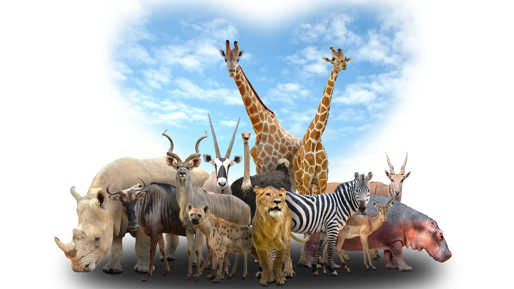

ความหลากหลายทางชีวภาพ
ความหลากหลายทางชีวภาพ (Biodiversity) หมายถึง ความหลากหลายของสิ่งมีชีวิตที่พบในธรรมชาติ ครอบคลุมทั้งความหลากหลายทางพันธุกรรม ความหลากหลายของชนิดพันธุ์ และความหลากหลายของระบบนิเวศ ความหลากหลายทางพันธุกรรมคือความแตกต่างของยีนภายในสิ่งมีชีวิตชนิดเดียวกัน เช่น สุนัขหรือข้าวที่มีสายพันธุ์แตกต่างกัน ความหลากหลายของชนิดพันธุ์คือความหลากหลายของสิ่งมีชีวิตแต่ละชนิดในพื้นที่หนึ่ง เช่น ป่าไม้ที่มีต้นไม้และสัตว์หลายชนิด ส่วนความหลากหลายของระบบนิเวศคือความหลากหลายของแหล่งที่อยู่อาศัย เช่น ป่าดิบชื้น ป่าชายเลน ทะเล และทุ่งหญ้า ความหลากหลายทางชีวภาพมีประโยชน์อย่างมากต่อมนุษย์และธรรมชาติ ช่วยให้เกิดแหล่งอาหาร ยารักษาโรค และทรัพยากรธรรมชาติ อีกทั้งยังช่วยรักษาสมดุลของระบบนิเวศ เช่น การผสมเกสรของพืชและการย่อยสลายซากสิ่งมีชีวิต อย่างไรก็ตาม การทำลายป่า มลพิษ และการเปลี่ยนแปลงสภาพภูมิอากาศล้วนส่งผลกระทบต่อความหลากหลายทางชีวภาพ การอนุรักษ์จึงทำได้โดยการรักษาป่าไม้ ป้องกันการล่าสัตว์ และจัดตั้งพื้นที่อนุรักษ์เพื่อขยายพันธุ์สิ่งมีชีวิตที่ใกล้สูญพันธุ์